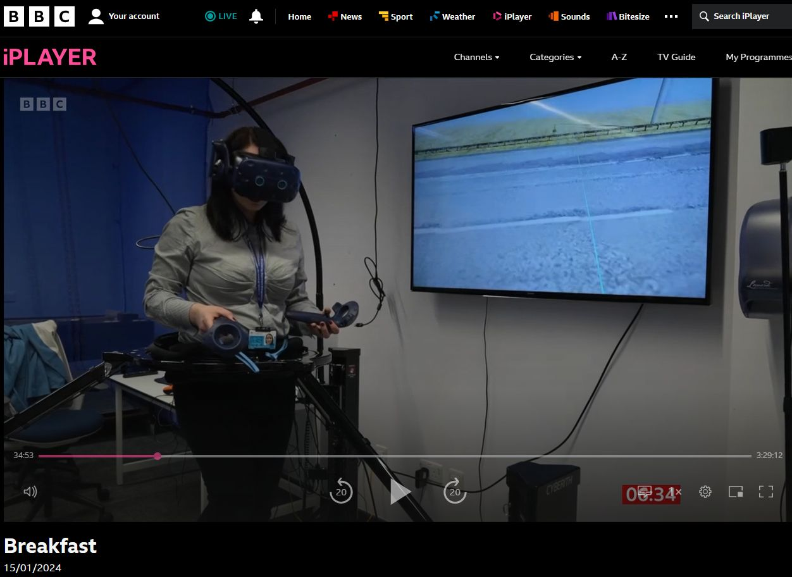
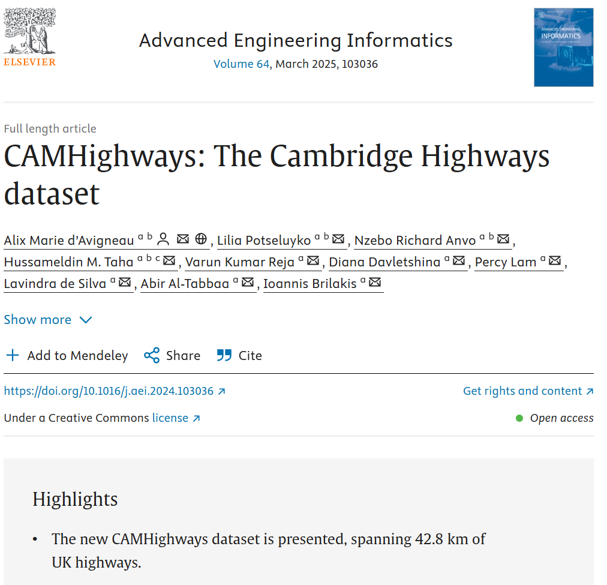
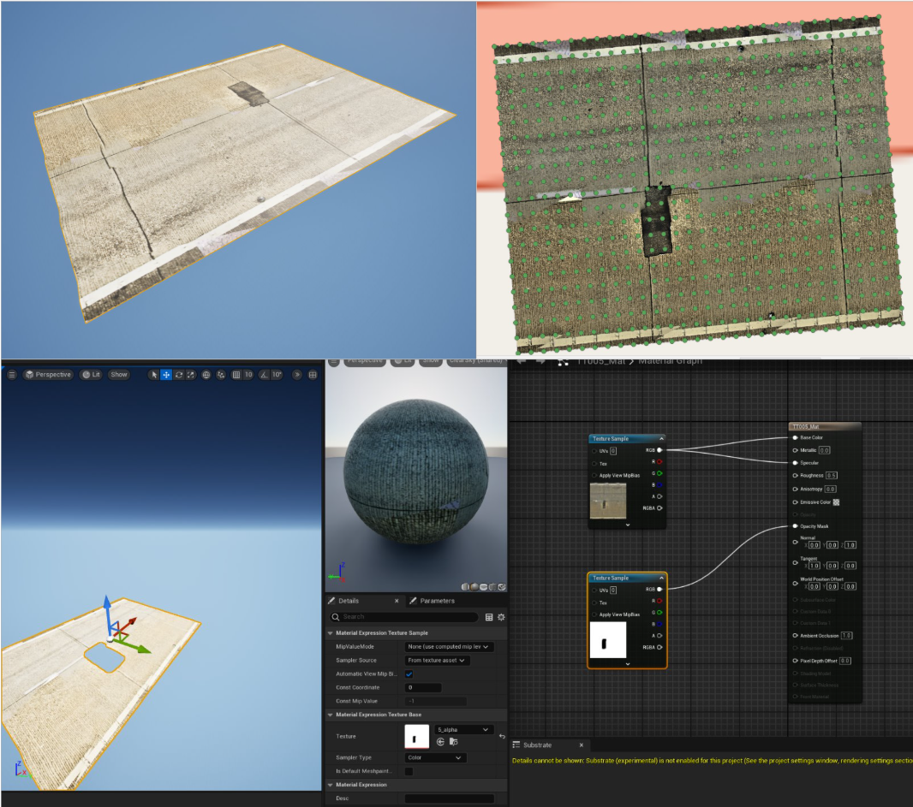
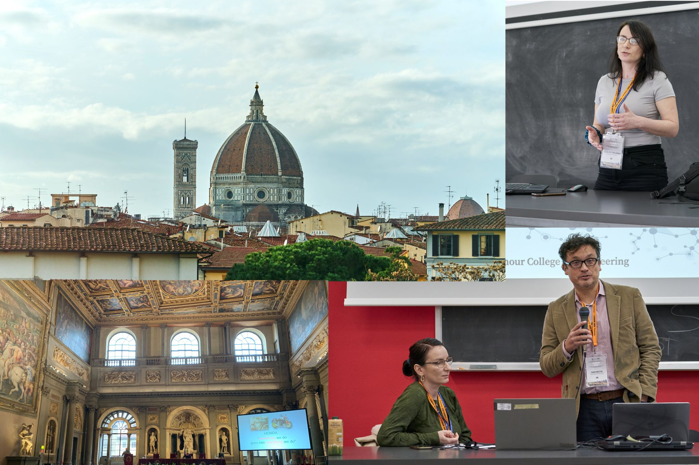
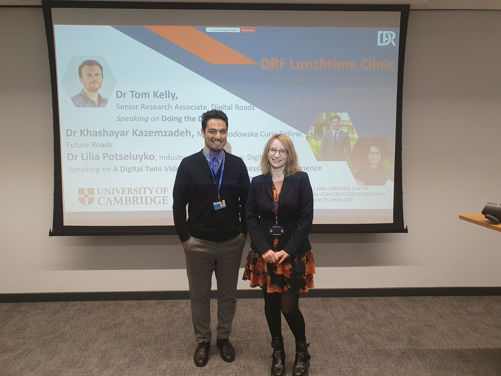
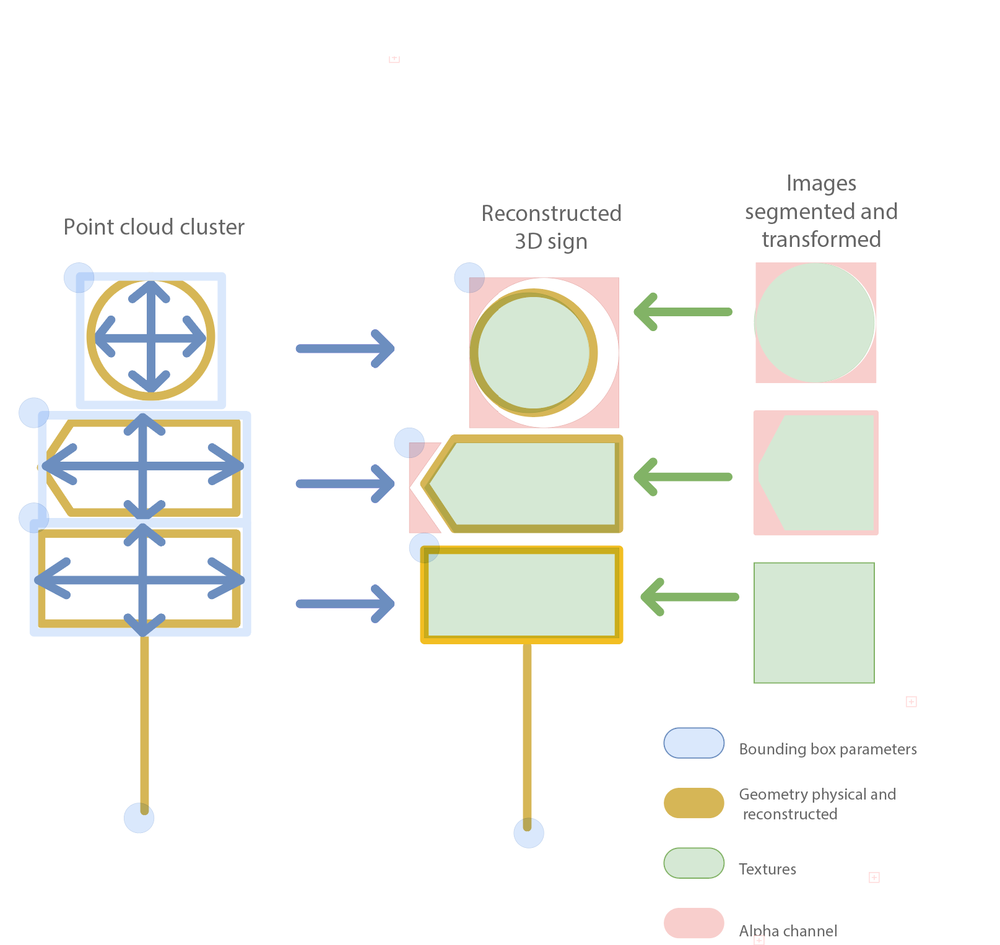
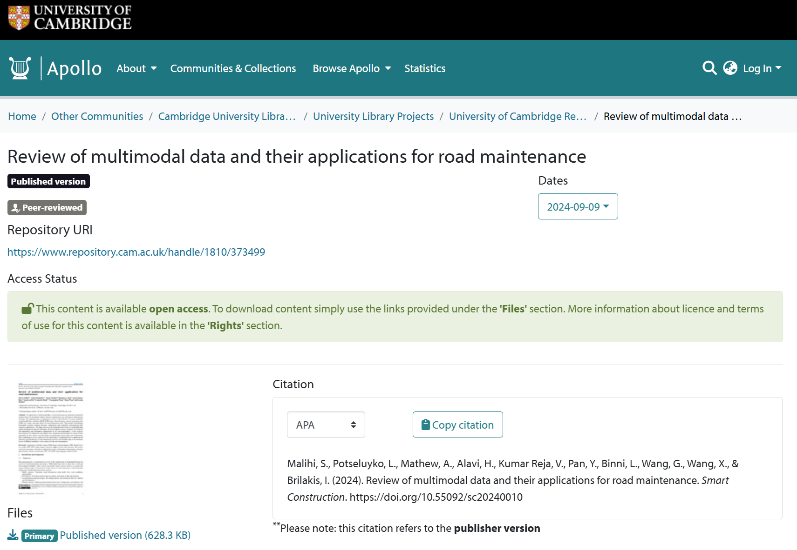
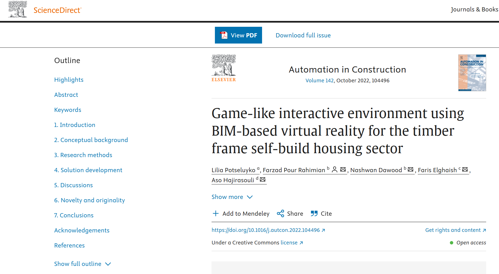
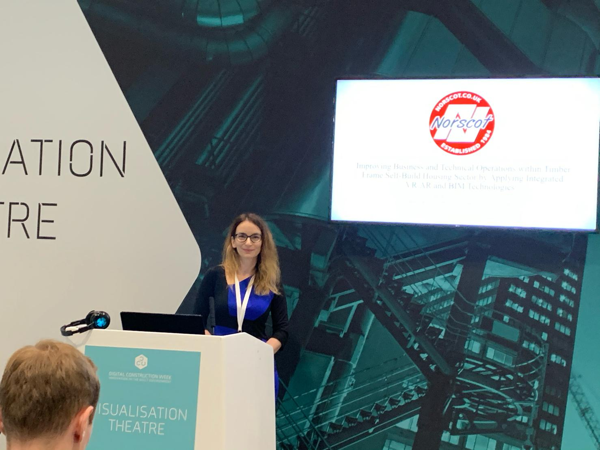

Research & Thought Leadership
Academic Work, Publications & Keynotes
Translating cutting-edge research in spatial data, digital twins, and immersive computing into peer-reviewed science, industry standards, public media features, and practical enterprise workshops.

National MediaPresenting Road Digital Twin Prototype for BBC (National Pothole Day)
Demonstrated real-time road condition inspection and 3D defect simulation prototypes on national television for BBC Pothole Day, illustrating how automated digital twins accelerate roadway maintenance triage.

Published PaperCAMHighways: The Cambridge Highways Dataset
Mobile mapping dataset surveying over 40 km of UK Highways. Features textured meshes for road assets, segmented/classified point clouds, orthomosaics from high-speed pavement imagery, defect annotations, and ground-penetrating radar point clouds to automate digital twin updating and robotics simulation.

Writing in ProgressEnhancing Road Digital Twins with Adaptive 3D Pavement Model
Presents a semi-automatic procedural pipeline for enhancing road Digital Twins with dynamically adaptive, textured meshes. Bridges the gap between sparse asset records and centimeter-accurate physical road representations.
Co-authors: Leonardo Binni, Varun Kumar Reja, Tom Kelly, Hamidreza Alavi

Conference • FlorenceSession Chairing & Workshop: Real-Time Game Engines for BIM & Digital Twins
Chaired academic presentation sessions and delivered an international workshop guiding researchers and enterprise engineers on deploying Unreal Engine pipelines for BIM data automation and interactive infrastructure twins.

Presentation • CambridgeLondon Cycling Safety Simulation & Behavioral Research
Presented findings on London cycling safety simulations developed for the UK Department for Transport with Khashayar Kazemzadeh, showcasing how virtual reality environments evaluate cyclist perception across 24 dynamic urban road configurations.

Under ReviewEnhancing Road Digital Twins with High-Fidelity 3D Traffic Sign Reconstruction
Proposes a hybrid computer vision and mobile mapping approach to solve critical challenges in 3D reconstruction of traffic signs, achieving high-fidelity asset geometry for automated maintenance and autonomous driving simulations.
Co-authors: Varun Kumar Reja, Xiaofang Wen, Hamidreza Alavi, Guangming Wang

Published PaperReview of Multimodal Data and Their Applications for Road Maintenance
A comprehensive state-of-the-art review synthesizing how LiDAR, high-resolution RGB imagery, thermal imaging, ground-penetrating radar (GPR), and sensor telemetry enhance automated decision-making and infrastructure resilience.
Technical Upskilling & Reality Data Knowledge Transfer
Spearheaded hands-on onboarding programs, documentation libraries, and regular knowledge-exchange clinics for the Cambridge Mobile Mapping research cluster, teaching cross-disciplinary engineers to parse dense point clouds and deploy interactive Unreal Engine simulations.

Published PaperGame-Like Interactive Environment Using BIM-Based VR for Timber Frame Housing
Investigates Design for Manufacture and Assembly (DfMA) gamification. Demonstrates how small and medium offsite manufacturers can automate customer-driven VR design modifications directly into manufacturing-ready BIM datasets.
 Industry Showcase
Industry Showcase
Nicander Tunnel Digital Twin: Operational Simulation Showcasing
Presented live interactive demonstrations of tunnel operations and incident response systems built with Nicander, highlighting real-time spatial awareness and operator ergonomics.

Keynote • LondonVirtual Reality for Offsite Construction Product Customization
Delivered an industry presentation on reducing costly bespoke architectural revisions by providing prospective home buyers with real-time interactive VR configurators linked to automated bills of materials.
 Showcase • Inverness
Showcase • Inverness
Innovate UK KTP: Norscot Joinery Digital Transformation
Presented the technical and commercial outcomes of the Innovate UK KTP partnership, detailing how immersive 3D workflows modernized manufacturing and customer acquisition.